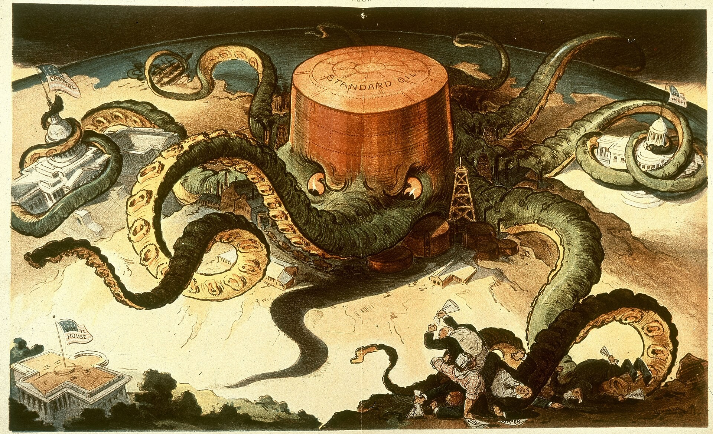
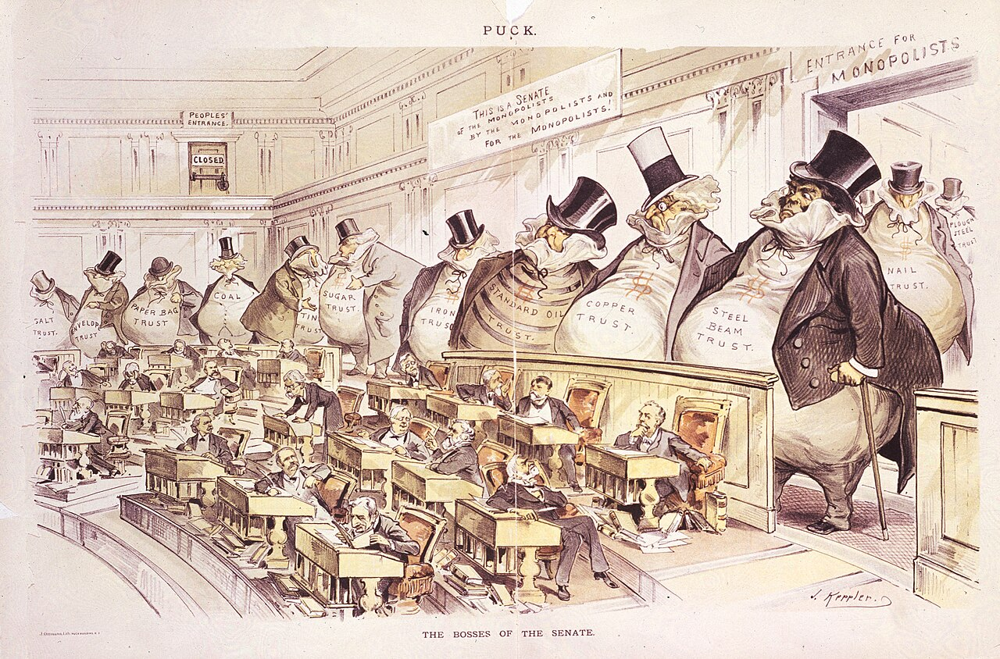

Directions: Congress is deciding how to use the new Sherman Antitrust Act, the 1890 federal law that banned combinations in restraint of trade. Your class is the Senate hearing committee. Each group takes one witness card below, prepares that witness, and answers the committee's questions from the witness's position. Witness summaries are labeled summaries written for this hearing, based on the record in the lesson reading. After all six witnesses testify, the committee issues a hearing finding.
Committee members (everyone not presenting a witness): listen for evidence about competition, prices, and fairness. After each witness, write one question you would ask and note the strongest claim the witness made.
Witness groups: read your card, underline the two facts you most want the committee to hear, and be ready to defend your witness under questioning. Stay in the witness's position, even when you disagree with it.
Source: Labeled summary of the complaints of independent oil refiners, as documented in accounts of Standard Oil's rise.

An independent refiner testifies that he built his refinery with his own savings and competed by refining oil well and charging a fair price. Then Standard Oil received secret rebates from the railroad, which lowered Standard's shipping cost below his on the same line. Standard then cut its local price below the cost of refining until his customers left. He was offered a choice: sell his refinery to the trust for less than it was worth, or be driven out of business. He argues he did not lose a fair contest. The contest was rigged by a shipping advantage no small firm could match.
State this witness's strongest evidence that the trust restrained trade, in one sentence.
What question would the company executive ask this witness, and how should the witness answer it?
Source: Labeled summary of household experience with kerosene prices and monopoly pricing.
A farm wife testifies for household buyers. When she was young, kerosene was a luxury and her family went to bed at dark in winter. Refining at large scale made kerosene cheap, and her home now has light after sunset. She is grateful, and she says the committee should remember it. But she also testifies that where one company sells the oil, the price is whatever that company sets, and it has risen after rival sellers closed. She buys from the trust because there is no one else to buy from. Cheap light, she says, is a poor bargain if the price can be raised the moment competition ends.
This witness supports and criticizes the trust at the same time. State one point on each side.
What does this witness want the committee to protect: low prices today, or competition that keeps prices low over time? Use her testimony to decide.
Source: Labeled summary of farmer and merchant complaints about railroad rates and rebates.
A wheat farmer and grain shipper testifies that his crop reaches market only by rail, and only one railroad serves his county. The railroad charges him the full posted rate. Large shippers, including the oil trust, ship at secret lower rates, and some received payments drawn from the rates smaller shippers paid. He argues that the railroad and the trust together decide what his wheat is worth before he sells a bushel. He does not ask the government to run his farm. He asks it to make the rates public and equal, so that his costs do not depend on the size of his neighbor's business.
Why does this witness say size itself became an unfair advantage? Answer with the rebate system at the center of your explanation.
Is this witness asking for laissez-faire, regulation, or something between the two? Defend your answer from the testimony.
Source: Labeled summary of the defense offered by the great combinations and their supporters.
An executive of the combination testifies that bigness is efficiency. His company buys materials in bulk, runs the newest refineries around the clock, and wastes nothing, so it can sell oil for less than any small refiner and still profit. Small firms were not destroyed by conspiracy, he argues. They were beaten by lower costs, which is what competition is for. He adds that the owners of great fortunes have used them for the public good, funding libraries, universities, and research. He closes with a warning: a law that punishes a company for being large and successful will punish the consumers who benefit from its prices. Government, he argues, should not regulate business or the economy.
State this witness's two strongest arguments, in one sentence each.
Which claim in this testimony would Witness 1 dispute most directly, and what evidence would Witness 1 use?
Source: Labeled summary of worker testimony on wages and conditions in the great industries.
A refinery worker testifies that the great company gave him steady work when smaller firms opened and closed with the market, and steady wages fed his family. He also testifies that the same company sets his hours, his pace, and his pay with no rival employer in town to bargain against. When the trust closed an older refinery to save money, the men in it lost their work by a decision made in an office they would never see. Efficiency, he says, is real. So is the fact that none of the savings he can see reached his pay envelope. He asks the committee to remember that a monopoly employs people as completely as it sells to them.
Give one benefit and one cost of the trust as this witness experienced them.
Why does this witness say a monopoly over an industry is also power over the people who work in it?
Source: Joseph Keppler, The Bosses of the Senate, Puck magazine, January 23, 1889, with a summary of the Sherman Act debate.

A senator testifies last, speaking for the committee itself. He reads the new law to the room: the Sherman Antitrust Act bans combinations in restraint of trade. He then puts the hard questions on the record. Does restraint of trade mean any combination, or only an unreasonable one? If a trust lowers prices, has it harmed the public, or helped it? And can a Congress that voters believe is influenced by the trusts, as the cartoon above charged a year before the act passed, enforce a law against the very interests that helped elect it? He argues the act will mean whatever the courts and the voters make it mean.
List the three hard questions this witness puts on the record.
What does the cartoon claim about who controlled the Senate in 1889, and what visual evidence carries the claim?
As a committee, choose one finding. Circle it, then defend it in a paragraph using testimony from at least two witnesses.
______ Finding A: The trust is a combination in restraint of trade and should be broken up under the Sherman Act.
______ Finding B: The trust restrains trade in its methods but not its size; regulate its methods (rebates, predatory pricing) and leave the company intact.
______ Finding C: The trust is efficient and lawful; the Sherman Act should not be used against it.
Defend your committee's finding. Name the finding, cite testimony from at least two witnesses, and answer the strongest argument against your finding.
State this witness's strongest evidence that the trust restrained trade. Standard Oil used secret railroad rebates to lower its shipping costs below rivals' costs on the same line, then cut prices below cost until independent refiners failed or sold out. The advantage came from the rebate, not from refining oil better.
What question would the company executive ask, and how should the witness answer? The executive would ask whether the refiner simply lost because his costs were higher. The witness should answer that his costs were higher because the railroad charged him more to ship the same product, a disadvantage the trust arranged in secret and no small firm could match.
State one point on each side. For the trust: large scale refining made kerosene cheap enough for ordinary households to light their homes. Against: where the trust is the only seller, it sets the price, and prices rose after rival sellers closed.
What does this witness want protected? Competition that keeps prices low over time. She accepts the low prices but testifies that a single seller can raise them once competition ends, so the protection she asks for is a market with rivals in it.
Why did size itself become an unfair advantage? Railroads gave large shippers secret lower rates and rebates while small shippers paid the full posted rate, so the biggest firms paid less to reach the same market. Size bought a lower cost that had nothing to do with farming or refining well.
Is this witness asking for laissez-faire, regulation, or something between? Something between. He does not ask government to run farms or set crop prices. He asks for public, equal railroad rates, which is a limited regulation aimed at keeping the contest fair.
State this witness's two strongest arguments. First, bigness is efficiency: bulk buying and modern plants lowered costs and prices below what small firms could offer. Second, punishing a company for size and success will raise prices for the consumers who benefit, and the fortunes created have funded libraries, universities, and research.
Which claim would Witness 1 dispute most directly? The claim that small firms were beaten by lower costs in fair competition. Witness 1's evidence is the secret rebate: the trust's costs were lower in part because the railroad charged it less, in secret, for the same service.
Give one benefit and one cost of the trust for this witness. Benefit: steady work and steady wages compared with small firms that opened and closed with the market. Cost: the company set hours, pace, and pay with no rival employer to bargain against, and could close his plant by a distant decision, ending his job.
Why is a monopoly also power over workers? A single dominant employer controls the terms of work as completely as a single seller controls prices. Workers cannot take their labor to a competitor that does not exist.
List the three hard questions. Whether restraint of trade means any combination or only an unreasonable one; whether a trust that lowers prices has harmed or helped the public; and whether a Congress influenced by the trusts can enforce a law against them.
What does the cartoon claim, and what visual evidence carries it? The cartoon claims the trusts, not the voters, controlled the Senate in 1889. The evidence: the trusts appear as giant money bags labeled steel, copper, oil, iron, and sugar looming over tiny senators, while the people's entrance to the gallery is bolted and barred.
Full credit should be awarded if the student:
Any of the three findings can earn full credit. Grade the use of testimony and the answer to the counterargument, not the finding chosen.